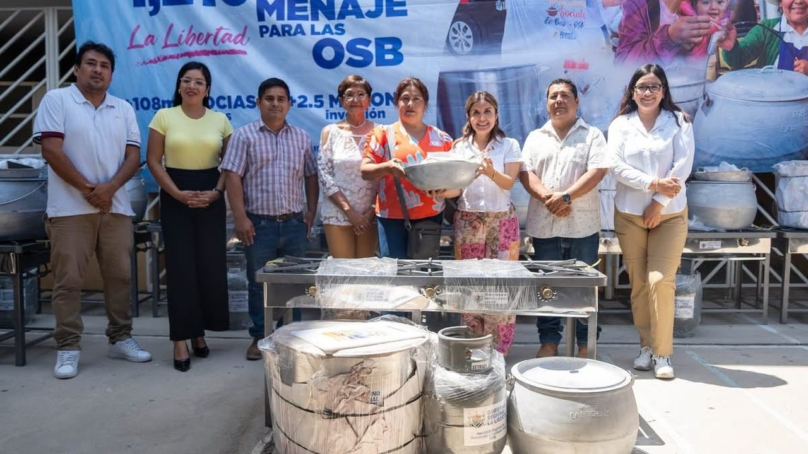

Alianza Lima no pudo ante Universidad San Martín por la quinta jornada de la Liga Peruana de Vóley. Jamaica por los cuartos de final de la Liga de Naciones Concacaf. Jamaica por la Liga de Naciones Concacaf, desde el Estadio Nacional de Kingston.





Alianza Lima no pudo ante Universidad San Martín por la quinta jornada de la Liga Peruana de Vóley. Jamaica por los cuartos de final de la Liga de Naciones Concacaf. Jamaica por la Liga de Naciones Concacaf, desde el Estadio Nacional de Kingston.
El Servicio Sismológico Nacional ( SSN ) mantiene este domingo 15 de noviembre monitoreo en tiempo real de la actividad sísmica en México.
Como dicen la mayoría de las encuestas, Alberto Núñez Feijóo llegaría a La Moncloa con el apoyo de Vox. O Pedro Sánchez puede obtener un resultado inesperado y volver a armar una mayoría con el resto de partidos del arco parlamentario.
Magaly Medina dedicó los primeros minutos de su programa del miércoles 11 de noviembre al regreso del papa León catorce al Perú. Con estas palabras, la periodista se sumó a las reacciones que ha generado la visita del papa León catorce, quien llegó al Perú este miércoles 11 de noviembre.
El documento expresa la "profunda preocupación" por las restricciones israelíes a la entrada de ayuda humanitaria y materiales de refugio a Gaza, incluidas tiendas de campaña, caravanas y casas móviles, así como suministros médicos.
Jamaica hoy por la ida de los cuartos de final de la Concacaf Nations League 2026 en el National Stadium de Kingston. El Tricolor visitará a Jamaica este sábado 14 de noviembre con la intención de conseguir una ventaja que le permita afrontar con mayor margen de maniobra el encuentro de vuelta en Monterrey.
Este Búho se emociona como millones de peruanos con la llegada del papa León catorce. Hoy el papa estará en Pucallpa y Cusco. El papa, quien ha vivido más de 40 años en Perú, no ha sido un clérigo de oficina, sino un peregrino en este país.
El papa León catorce se despedirá del Perú con una multitudinaria celebración. El lunes 16 de noviembre, a las, el pontífice celebrará su última santa misa en el país, en la Base Aérea de Las Palmas, ubicada en Santiago de Surco.
El Papa se refirió a la Amazonía en su primer día en el Perú. Este domingo, León catorce se convertirá en el primer papa que pise la tierra de Pucallpa. León catorce lanzó un llamado a defender las lenguas originarias durante su alocución en el Gran Teatro Nacional el miércoles 11 de noviembre.
Cada edición dura menos de dos minutos. En la web tienes el resumen de cada historia y el enlace directo al medio original para leerla completa.
Conoce Olfatecho →